Teorema di Hales-Jewett
Sia  un semigruppo e sia 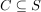 un sotto-semigruppo tale che per ogni 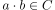 si ha 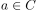 e 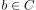1.
un semigruppo e sia 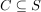 un sotto-semigruppo tale che per ogni 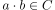 si ha 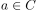 e 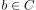1.
Dato 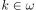 sia2
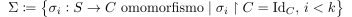
Per ogni colorazione finita di  esiste
esiste  tale che
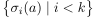
è monocromatico.
tale che
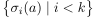
è monocromatico.
Una dimostrazione di questo può essere prodotta utilizzando gli strumenti della Teoria dei Modelli, sfruttando il Semigruppo di Ellis. Se ne lascia qui una traccia:
Sia 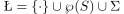. Sia  modello mostro, e sia 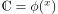, dove
modello mostro, e sia 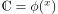, dove

- Dal momento che la proprietà nice è esprimibile al prim’ordine, anche
 è nice. Pertanto 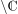 è ideale sinistro.
è nice. Pertanto 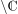 è ideale sinistro. - Sia
 ideale sinistro minimale tipo-definibile, e sia 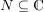 ideale sinistro di
ideale sinistro minimale tipo-definibile, e sia 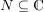 ideale sinistro di  minimale tipo-definibile.
minimale tipo-definibile. - Sia
 idempotente, e sia 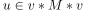 idempotente.
idempotente, e sia 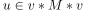 idempotente. Per ogni 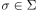
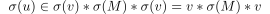 1con
 idempotente.
idempotente.
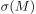 è ideale sinistro di
, in quanto  è l’identità su :
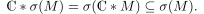
è l’identità su :
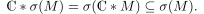Si ha che
 e per minimalità di
e per minimalità di  :
:

- Applicando alla : 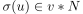, ma per un lemma già visto 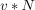 è un gruppo con identità 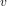, e quindi
 per ogni .
per ogni .
Dunque
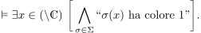
e pertanto vale anche per .
Footnotes:
1
Diremo che il sottosemigruppo è nice.
2
Vedi “Omomorfismo di semigruppi”